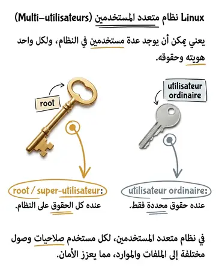
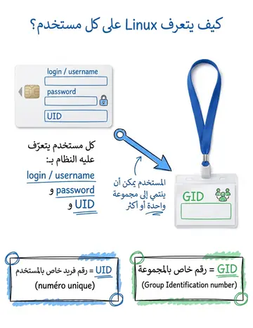
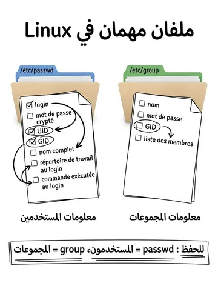

Utilisateurs & groupes
المستخدمون والمجموعات
الشرح بالعربية
Linux متعدد المستخدمين؛ root يملك كل الصلاحيات. كل مستخدم له UID ومجموعة أساسية GID. كل ملف يُنسب إلى المالك User والمجموعة Group والآخرين Others. ملفات النظام: /etc/passwd للحسابات، /etc/shadow لكلمات السر المشفرة، /etc/group للمجموعات. المجلد الشخصي عادة /home/utilisateur. الأمان يمر عبر الأذونات.
Illustrations de la leçon
4 planches · cliquez pour agrandir


Contenu du cours
Pages 197–202 · texte intégral du support
GESTION DES
UTILISATEURS
Linux est un système multi-utilisateurs :
Pour préserver la sécurité et la confidentialité des donnée, Linux assure un système d’identification et de gestion des utilisateurs
Un utilisateur est donc celui qui s’est logué en donnant un nom de login. Ce login permet de définir l’utilisateur et tracer l’activité menée en son nom.
LES UTILISATEURS
LES UTILISATEURS
Il existe deux types d’utilisateurs :
Le root ou le super utilisateur a l’ensemble des droits sur le système.
Utilisateur ordinaire ayant des droits bien définies sur le système.
Il existe 3 classes d'utilisateurs :
Le propriétaire du fichier (User)
Le groupe dans lequel appartient le propriétaire (Group)
Les autres (Others).
Others
LES UTILISATEURS
Utilisateur : Personne autorisée à se connecter sur le système.
Son accès est autorisé après identification :
Par son nom d'utilisateur (username ou login).
Par son mot de passe associe (password).
Il dispose d'une zone privée sur le disque :
généralement située dans /home/username ou dans /users/username
sur laquelle il a tous les droits.
La taille de cette zone privée (i.e. le nombre d'octets qu'il est possible d'y stocker) peut être restreinte a un quota.
il est identifié par un numéro unique ou UID (User IDentication number).
il appartient a un ou plusieurs groupes (mais un groupe dans lequel Il est par défaut).
LES GROUPES
Groupe : Ensemble de personnes ou de groupes.
Les groupes sont utilisés pour contrôler les accès au sein du système.
Le changement de groupe est (éventuellement) contrôlé par un mot de passe.
il est géré par un administrateur spécifique au groupe (ou par défaut le super-utilisateur).
il est identité par un numéro unique ou GID (Group IDentication number).
Fichiers de description des utilisateurs et des groupes :
/etc/passwd pour les utilisateurs
:
Contient les informations relatives aux utilisateurs (login, mot de passe crypté, uid, gid, nom complet, répertoire de travail au login, commande exécutée au login).
/etc/group pour les groupes : Contient les informations relatives aux groupes (nom, mot de passe, gid, liste des membres du groupe).